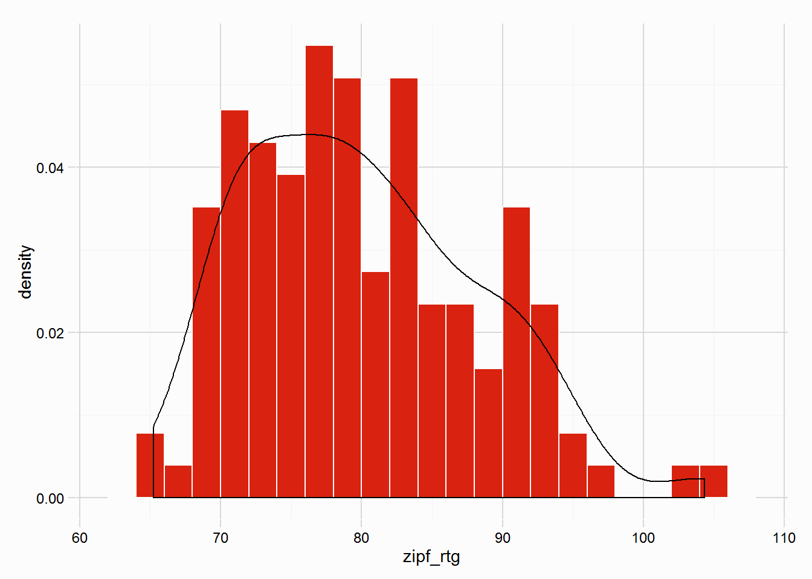
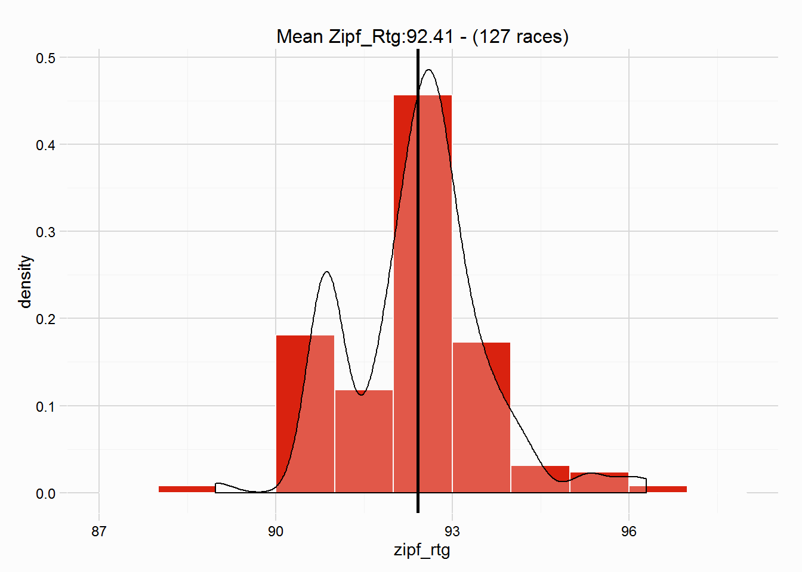

This vignette walks through the use of zipf_hcp, which can be used to handicap a single race by using a dataset of similar, but different races. In this case we will use part of the gulfstream dataset (used in the Data Preparation and Initialise a Handicap vignettes)
Load the dataset:
data(gulfstream)First, subset a single race from the dataset, we’ll use the first race in the dataset, we also want to remove that race from the gulfstream dataset (for this vignette). As shown in other vignettes, a unique race id is useful, so we’ll create that variable, date_race, first:
gulfstream$date_race <- paste(gulfstream$date, gulfstream$race, sep = "_")
head(gulfstream$date_race)## [1] "01/01/13_1" "01/01/13_1" "01/01/13_1" "01/01/13_1" "01/01/13_1"
## [6] "01/01/13_1"# subset the race
race <- subset(gulfstream, date_race == "01/01/13_1")
gulfstream <- subset(gulfstream, date_race != "01/01/13_1")To handicap our race we want to only look at races of similar type/class, so further subsetting of the gulfstream dataset is needed. Our class of race in race is mdn clm
gulfstream <- subset(gulfstream, race_type == "mdn clm")At this point we need to create some arbitrary ratings for the races in gulfstream, this is done below purely to serve as an example, I have included the code in this vignette, it is not important for the use of zipf_hcp but could be useful to see. It is not useful as the correct use of zipf_hcp will call on a dataset that has existing ratings, rather than quickly manufactured ratings, where winners have an arbitrary mean rating of 80.
# load dplyr
library(dplyr)
# prepare gulfstream dataset for use of zipf_init
gulfstream <- gulfstream %>%
group_by(date_race) %>%
mutate(btn_sec = btn_sec(fintime),
scale = lbs_per_sec(dist = dist, surf = "dirt"),
btn_lbs = scale * btn_sec,
diff_wgts = diff_at_wgts(btn_lbs = btn_lbs, wgt_carried = wgt))
# call zipf_init
our_hcp <- zipf_init(races = gulfstream, group_by = "race_type", race_id = "date_race", btn_var = "diff_wgts")
# merge dataframe
gulfstream <- merge_zipf_init(zipf_list = our_hcp, races = gulfstream, btn_var = "diff_wgts")
# at the moment ratings for winners have a mean of 0, make this mean about 80 by simply adding 80 to zipf_rtg variable
gulfstream$zipf_rtg <- gulfstream$zipf_rtg + 80Preparation of our race is now required ahead of using zipf_hcp and the gulfstream dataset and the ratings therein. The preparation of a race so it is ready to be handicapped is covered in the Data Preparation and Initialise a Handicap vignettes. There are a number of variables needed for handicapping a single race, these are:
The variables above should be pretty common in a racing dataset that you wish to calculate ratings from. In the gulfstream dataset we have all the above. Individual final times for horses might be a hurdle, but lengths beaten is a much more common variable, and as covered in the Data Cleaning vignette, the conv_margins can convert lengths beaten into final times.
We now need to use the variables listed above to calculate a difference at the weights assessment, this takes into account the surface, distance, weight carried, and beaten margins. The best (imo) way to do this is to use the package dplyr which takes advantage of the %>% pipe function from magrittr to calculate the necessary variables. The code below processes our race, creating the necessary variables, finishing with a diff_wgts variable. It is explained in more detail below the code, the functions used from RcappeR are btn_sec, lbs_per_sec and diff_at_wgts:
race <- race %>%
mutate(btn_sec = btn_sec(fintime),
scale = lbs_per_sec(dist = dist, surf = "dirt"),
btn_lbs = scale * btn_sec,
diff_wgts = diff_at_wgts(btn_lbs = btn_lbs, wgt_carried = wgt))gulfstream <- gulfstream %>%group_by(date_race)btn_sec = btn_sec(fintime),scale = lbs_per_sec(dist = dist, surf = "dirt"),btn_lbs = scale * btn_sec,diff_at_wtgs(btn_lbs = btn_lbs, wgt_carried = wgt))The handicapping methodology uses a version of race standardisation first explained by Simon Rowlands, Head of Research at Timeform, specifically using Zipfs Law (hence the names of this family of functions, see also ?zipf_race and ?zipf_hcp).
Race standardisation looks at races of similar class/type and assesses the performance of one winner, by assessing the performance of winners in the different, but similar, races. A more detailed explanation can be found in the Zipf Race vignette, which walks through a simple example using the zipf_race function, which is called by zipf_init (and zipf_hcp).
The similar races we’re using in this vignette are all mdn clm, and have ratings (arbitrarily created), a quick look at the distribution of winners’ ratings, in our gulfstream dataset:

Now to use zipf_hcp and handicap our race. Below is a simple table explaining the various inputs to zipf_hcp:
| param | details | example input |
|---|---|---|
| race | a dataframe of a single race | race |
| past_races | dataframe of past races to be used to handicap | gulfstream |
| race_id | name of variable, identifying unique races in past_races |
date_race |
| btn_var | name of variable in race with margins between horses |
"diff_wgts" |
| rating | name of variable in past_races that contains ratings of those horses |
zipf_rtg |
| results | determines output, a detailed list, or a single rating | "detail" (default value) |
| .progress | plyr’s progress bar, useful when past_races is a large dataset |
"none" |
So:
our_hcp <- zipf_hcp(race = race, past_races = gulfstream, race_id = "date_race", btn_var = "diff_wgts", rating = "zipf_rtg", .progress = "text")This small example, handicapping a single race using 127 took 0.0380251 seconds.
The output of zipf_hcp is a list (of class “rcapper_zipf_hcp”), there are print an summary methods for this class of object (though both do the same):
our_hcp##
## No. of races used: 127
## Mean Rating: 92.41
## Std. Dev: 1.15summary(our_hcp)##
## No. of races used: 127
## Mean Rating: 92.41
## Std. Dev: 1.15There is also a plot method, perhaps the most useful, which plots the distribution of ratings for the winner of race. It includes the mean rating in the title of the plot, as well as a vertical line in the plot.
plot(our_hcp)
From this point, decisions by the handicapper can be made, the various elements of the list can be accessed for further analysis, for example, a dataset of possible ratings for the winner of race can be accessed:
possible_rtgs <- our_hcp$ratings
head(possible_rtgs)## date_race zipf_rtg
## 1 01/02/13_2 90.90
## 2 01/03/13_10 92.22
## 3 01/03/13_6 92.96
## 4 01/03/13_7 93.19
## 5 01/12/13_4 90.92
## 6 01/12/13_6 92.51